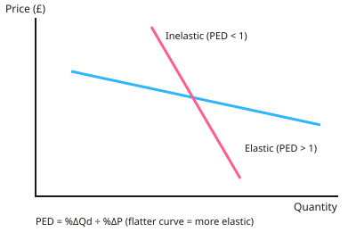

GCSE Economics · Topic 3
Price Determination and Elasticity
This topic looks at how prices are set in markets, and how sensitive buyers and sellers are to changes.
We will calculate price elasticity of demand, price elasticity of supply and income elasticity of demand.
Then we apply supply and demand to real markets, and see how related markets affect each other.
- 4 subtopics
- 152 questions
- Free: 3.1 notes and 10 questions
In this topic
- 3.1Price elasticity of demand: calculating, interpreting and its determinantsFree below · 29 questions
- 3.2Price elasticity of supply and income elasticity of demandOpen in Full Marks · 27 questions
- 3.3Applying supply and demand analysis: a changing market case study (housing, oil or concert tickets)Open in Full Marks · 32 questions
- 3.4Related markets: joint, composite and competitive demand and supply, and derived demandOpen in Full Marks · 64 questions
3.1 · Free notes
Price elasticity of demand: calculating, interpreting and its determinants

Key points
- Price elasticity of demand (PED) measures how responsive quantity demanded is to a change in price.
- PED = % change in quantity demanded ÷ % change in price. Work out each percentage change as (change ÷ original) × 100.
- PED is normally negative because of the law of demand. Examiners usually accept the size of the number, so a PED of -2 is read as 2.
- Elastic demand: PED > 1. Quantity demanded changes by a bigger percentage than price. Inelastic demand: PED < 1. Quantity changes by a smaller percentage.
- Special cases: unitary elasticity (PED = 1), perfectly inelastic (PED = 0, vertical demand curve) and perfectly elastic (PED = infinity, horizontal demand curve).
- Worked example: price rises 10% and quantity demanded falls 25%, so PED = -25 ÷ 10 = -2.5, which is elastic. A flatter demand curve is more elastic than a steeper one.
- Determinants of PED: availability and closeness of substitutes, necessity or luxury, proportion of income spent on the good, time period and addiction or habit.
- Demand is more elastic in the long run because consumers have time to find alternatives. Demand for a narrowly defined product (e.g. Kellogg's Corn Flakes) is more elastic than for a broad category (e.g. cereal).
- Total revenue = price × quantity. If demand is inelastic, a price rise increases revenue and a price cut reduces it. If demand is elastic, a price cut increases revenue and a price rise reduces it. At PED = 1, revenue is unchanged.
- Business use: firms with elastic demand may cut prices or run promotions to raise revenue. Firms selling necessities have more pricing power.
- Government use: taxes on goods with inelastic demand (cigarettes, alcohol, petrol) raise a lot of revenue but cut consumption only slightly. Examiners reward evaluation, e.g. that the short run differs from the long run.
In more detail
- Worked PED: price rises from £2.00 to £2.20 (+10%) and sales fall from 1,000 to 950 (−5%) → PED = −5 ÷ 10 = −0.5, so demand is inelastic.
- Worked revenue check: before, £2.00 × 1,000 = £2,000; after, £2.20 × 950 = £2,090. Revenue rises, as expected when demand is inelastic.
- Product vs brand: demand for petrol overall is inelastic, but demand for petrol from one particular garage is elastic, because drivers can use the station down the road.
- Exam tip: say whether PED is elastic or inelastic, then explain what it means for revenue in the scenario.
Practice
Price elasticity of demand: calculating, interpreting and its determinants: 10 questions
Pick an answer to check it, or open the answer for the explanation.
1. Price of a bus fare rises by 10% and the quantity demanded falls by 25%. What is PED, and is demand elastic or inelastic?
- -2.5, elastic
- -0.4, elastic
- -2.5, inelastic
- -0.4, inelastic
Show answer
A: -2.5, elastic. PED = -25 ÷ 10 = -2.5. The size is greater than 1, so demand is elastic: quantity falls proportionately more than price rises.
2. A café raises the price of a coffee from £2.00 to £2.50 and weekly sales fall from 1,000 to 900. What is PED?
- -0.4
- -4.0
- -2.5
- -0.1
Show answer
A: -0.4. Price change is +25% and quantity change is -10%. PED = -10 ÷ 25 = -0.4, so demand is inelastic.
3. The PED for petrol is -0.3. If the price rises by 10%, quantity demanded will fall by approximately:
- 33%
- 30%
- 0.3%
- 3%
Show answer
D: 3%. % change in quantity = PED × % change in price = -0.3 × 10 = -3%. Inelastic demand means a smaller percentage fall than the price rise.
4. A firm's product has a PED of -0.5. The firm raises its price. What happens to total revenue?
- It rises
- It falls
- It cannot be predicted
- It stays the same
Show answer
A: It rises. Demand is inelastic, so quantity falls proportionately less than price rises. Price × quantity therefore increases.
5. A supermarket's own-brand pasta has a PED of -2.0. Which action is most likely to increase its revenue?
- Raise the price
- Cut the price
- Keep the price the same
- Raise the price and cut stock
Show answer
B: Cut the price. With elastic demand, a price cut raises quantity demanded by a bigger percentage than the fall in price, so revenue increases.
6. Which factor would make demand for a product MORE price elastic?
- It takes a tiny share of income
- It is a necessity
- Many close substitutes are available
- Consumers are addicted to it
Show answer
C: Many close substitutes are available. Many close substitutes let consumers switch easily when the price rises, so quantity demanded falls proportionately more.
7. Why is demand for petrol usually more elastic in the long run than in the short run?
- Petrol becomes a luxury
- Petrol prices always fall over time
- Firms increase supply
- Consumers have time to switch to alternatives such as electric cars
Show answer
D: Consumers have time to switch to alternatives such as electric cars. Over a longer period consumers can change vehicles, move house or use public transport, so they respond more to price changes.
8. Demand for a good has unitary elasticity (PED = -1). If the seller raises the price, total revenue will:
- Fall
- Double
- Rise
- Stay the same
Show answer
D: Stay the same. The percentage fall in quantity exactly equals the percentage rise in price, so price × quantity stays unchanged.
9. PEDs are: Product A -0.3, Product B -1.8, Product C -0.9. Which seller could raise revenue by cutting price?
- Sellers of A and C
- Seller of C
- Seller of B
- Seller of A
Show answer
C: Seller of B. Only product B has elastic demand (size greater than 1). A and C are inelastic, so a price cut would reduce their revenue.
10. Which product is likely to have the most inelastic demand?
- Life-saving heart medication
- Holidays in Spain
- Cinema tickets
- Branded crisps
Show answer
A: Life-saving heart medication. It is a necessity with no close substitutes, so buyers will pay the higher price and demand is highly inelastic.
Keep going in Full Marks
Full Marks has 29 questions on Price elasticity of demand: calculating, interpreting and its determinants (19 more than here), set out in practice levels. You also get notes and 3D models for all 4 subtopics of Price Determination and Elasticity, plus games, timed exams and past papers.